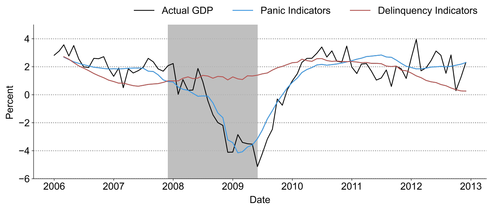
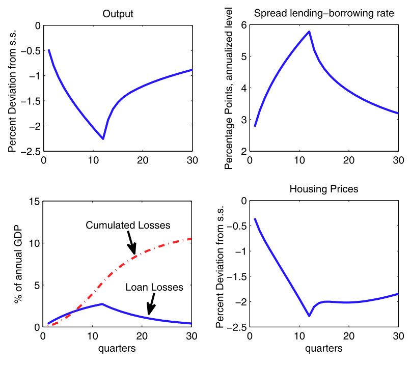
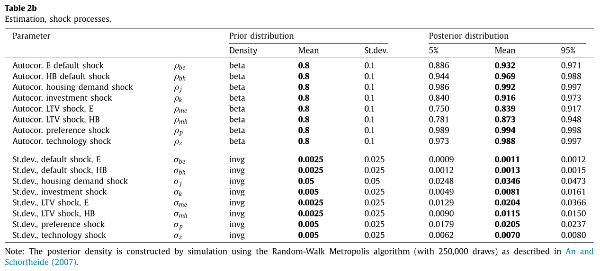
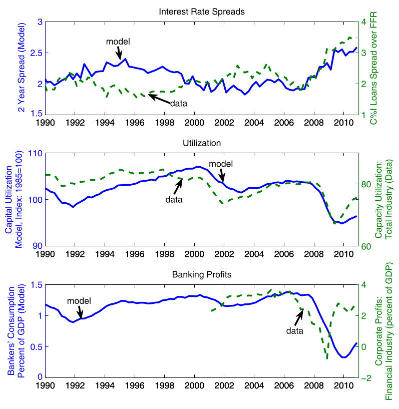

Financial Intermediation
Macro II - Fluctuations - ENSAE, 2024-2025
The Importance of Financial Intermediaries

Ben Bernanke
- chairman of the Fed (2006-2014) succeeding Alan Greenspan
- aka Helicopter Ben
- was an expert of the Great Depression…
- gvt/cb should have printed more money
- …and had to face the Great Recession
- gvt/cb should have been more careful about the state of financial intermediaries
- received the Nobel Prize in 2022 with Diamond and Dybvig
- for their work on banks and their necessary bailouts during financial crises
- bernanke (and others) incorporated realistic models of banks (from D&D) in DSGE models
- His acceptance speech is online
Credit Markets
Credit markets are crucial to understand:
- financial crises
- the persistence of “garden-variety” recessions
- monetary policy
- financial regulation and prudential policies
- now part of “macropru”, which takes a big mindshare in central banks
Issues with Credit
- Imperfect and asymmetric information
- borrowers know more about their financial capacity
- -> Moral hazard: no incentive to behave in a way to make payment
- -> Adverse selection problem
- riskier borrowers have more incentives to apply for funds
- Banks and other Lenders deal with these problems with various tools:
- long-term relationship
- screening
- monitoring
- restrictions on lenders (covenant1)
- collateral
Financial accelerator2:
- higher EFP: tighter credit standard, less lending, slows the economy
- weaker economy reduces financial health of lenders/borrowers, raises EFP
. . .

The Great Recession
i::: {.incremental}
- Great Recession Resulted from “credit disruptions”
- A large fraction of intermediaries were shadow banks (investment banks, mortgage companies, money market funds, …) which
- did not have access for federal reserve loans like banks
- relied on short-term funding
- were vulnerable to bank runs
- Bernanke (2018) show that during the crisis, measures of financial panic (funding costs) predicted very well real quantities
:::

Financial Business Cycles
Financial Business Cycles

- Matteo Iacoviello
- works at Federal Reserve Board
- specialized in macro modeling especially on the housing market
- Financial business cycles, Review of Economic Dynamics 2015
- DSGE model with a financial sector and financial shocks
- model is estimated
- result: recessions (cycles) are triggered by credit shocks
- Model is rather simple in terms of microfoundations
- … explains why it is underpublished
Summary
I consider a discrete-time economy.
The economy features three agents: households, bankers, and entrepreneurs. Each agent has a unit mass.
Households work, consume and buy real estate, and make one-period deposits into a bank. The household sector in the aggregate is net saver.
Entrepreneurs accumulate real estate, hire households, and borrow from banks.
In between the households and the entrepreneurs, bankers intermediate funds. The nature of the banking activity implies that bankers are borrowers when it comes to their relationship with households, and are lenders when it comes to their relationship with the credit-dependent sector – the entrepreneurs.
I design preferences in a way that two frictions coexist and interact in the model’s equilibrium: first, bankers are credit constrained in how much they can borrow from the patient savers; second, entrepreneurs are credit constrained in how much they can borrow from bankers.
Summary
I consider a discrete-time economy.
The economy features three agents: households, bankers, and entrepreneurs. Each agent has a unit mass.
Households work, consume and buy real estate, and make one-period deposits into a bank. The household sector in the aggregate is net saver.
Entrepreneurs accumulate real estate, hire households, and borrow from banks.
In between the households and the entrepreneurs, bankers intermediate funds. The nature of the banking activity implies that bankers are borrowers when it comes to their relationship with households, and are lenders when it comes to their relationship with the credit-dependent sector – the entrepreneurs.
I design preferences in a way that two frictions coexist and interact in the model’s equilibrium: first, bankers are credit constrained in how much they can borrow from the patient savers; second, entrepreneurs are credit constrained in how much they can borrow from bankers.
Households
Representative agent chooses housing \(H_{H,t}\), consumption \(C_{T,t}\) and time spent working \(N_{H,t}\) to solve
\[\max E_t \sum_{t=0}^{\infty} \beta^t_H \left( \log C_{H,t} + j \log H_{H,t} + \tau \log(1-N_{H,t}) \right)\]
where \(\beta_{H,t}\) is the discount factor and \(j,\tau\) two preference parameters.
. . .
subject to the Budget constraint:
\[C_{H,t} + D_t + q_t \left( H_{H,t}- H_{H,t-1} \right) = R_{H,t-1} D_{t-1} + W_{H,t} N_{H,t} + \epsilon_t\]
where:
- \(D_t\): bank deposits earning gross return \(R_{H,t}\)
- \(q_t\): price of housing
- \(W_t\): wage rate
- \(\epsilon_t\): a redistributive shock (proxy for default)
Households:
Representative agent chooses housing \(H_{H,t}\), consumption \(C_{T,t}\) and time spent working \(N_{H,t}\) to solve
\[\max E_t \sum_{t=0}^{\infty} \beta^t_H \left( \log C_{H,t} + j \log H_{H,t} + \tau \log(1-N_{H,t}) \right)\]
where \(\beta_{H,t}\) is the discount factor and \(j,\tau\) two preference parameters.
subject to the Budget constraint:
\[C_{H,t} + D_t + q_t \left( H_{H,t}- H_{H,t-1} \right) = R_{H,t-1} D_{t-1} + W_{H,t} N_{H,t} + \epsilon_t\]
where:
- \(D_t\): bank deposits earning gross return \(R_{H,t}\)
- \(q_t\): price of housing
- \(W_t\): wage rate
- \(\epsilon_t\): a redistributive shock (proxy for default)
We can derive the following optimality conditions:
\[\frac{1}{C_{H,t}} = \beta_H E_t \left( \frac{1}{C_{H,t+1}} R_{H,t} \right)\] \[\frac{q_t}{C_{H,t}} = \frac{j}{H_{H,t}} + \beta_H E_t \left( \frac{q_{t+1}}{C_{H,t+1}} \right)\] \[\frac{W_{H,t}}{C_{H,t}} = \frac{\tau}{1-N_{H,t}}\]
Entrepreneurs
The representative entrepreneur chooses consumption \(C_{E,t}\), housing \(H_{H,t}\), production \(Y_t\), worker’s time \(N_{H,t}\) \[\max E_0 \sum_{t=0}^{\infty} \beta^t_E \log C_{E,t}\]
subject to:
\[C_{E,t} + q_t \left( H_{E,t} - H_{E,t-1} \right) + R_{E,t} L_{E,t-1} + W_{H,t} N_{H,t} + a c_{EE,t} = Y_t + L_{E,t}\]
\[Y_t = H^{\nu}_{E,t-1} N^{1-\nu}_{H,t}\]
\[ L_{E,t} \leq m_H E_t \left( \frac{q_{t+1}}{R_{E,t+1}}H_{E,t} \right) - m_N W_{H,t} N_{H,t} \tag{1}\]
\(L_{E,t}\) are loans to the entrepreneur with gross return \(R_{E,t}\)
\(c_{EE,t}=\frac{\phi_{EE}}{2}\frac{\left(L_{E,t}-L_{E,t-1}\right)}{L_E}\) with \(L_E\) the steady-state of \(L_{E,t}\) 4
- captures the fact that loans change slowly
Borrowing constraint:
\[ L_{E,t} \leq m_H E_t \left( \frac{q_{t+1}}{R_{E,t+1}}H_{E,t} \right) - m_N W_{H,t} N_{H,t} \tag{2}\]
- entrepreneurs cannot borrow more than a fraction \(m_H\) of the expected value of their real estate stock
- a fraction \(m_N\) of the wage bill must be paid in advance
- entrepreneurs can’t borrow to cover it
Assumption: entrepreneurs discount future more than housholds and bankers
\[\beta_E < \frac{1}{\gamma_E \frac{1}{\beta_H} + (1-\gamma_E)\frac{1}{\beta_B}}\] with \(\gamma_E\in[0,1]\)
Entrepreneurs: optimality conditions
We get the following optimality conditions
\[\left( 1- \lambda_{E,t} - \frac{\partial ac_{LE,t}}{\partial L_{E,t}}\right) \frac{1}{c_{E,t}} = \beta_E E_t \left( R_{E,t+1} \frac{1}{c_{E,t+11}}\right)\]
\[\left( q_t- \lambda_{E,t} m_H E_t \left( \frac{q_{t+1}}{R_{E,t+1}} \right) \right)\frac{1}{c_{E,t}} = \beta_E E_t \left( \left(q_{t+1} + \frac{\nu Y_{t+1}}{H_{E,t}} \right) \frac{1}{c_{E,t+1}}\right) \]
\[\frac{(1-\nu)Y_t}{1+m_N \lambda_{E,t}}=W_{H,t} N_{H,t}\]
Comment: credit constraint introduces a wedge between the cost of factors and their marginal product.
- a distortion like a tax
Bankers
The representative banker maximizes private consumption \(C_{B,t}\)
\[\max E_0 \sum_{t=0}^{\infty} \beta^t_B \log C_{B,t}\]
\[C_{B,t} + R_{H,t-1} D_{t-1} + L_{E,t} + a c_{EB,t} = D_t + R_{E,t} L_{E,t-1} - \epsilon_t\]
where:
\(D_t\): households deposits
\(L_{E,t}\): loans to entrepreneurs
\(a c_{EB,t} = \frac{\phi_{EB}}{2} \frac{(L_{E,t-L_{E,t-1}})^2}{L_E}\) is quadratic adjustment cost5
the ability to convert deposits into loans is limited by a borrowing constraint6
\[D_t \leq \gamma_E \left( L_{E,t} - E_t \epsilon_{t+1} \right)\]
Bankers (optimality)
Denote:
- \(m_{B,t} = \beta_B E_t \left( \frac{C_{B,t}}{C_{B,t+1}}\right)\): the stochastic discount factor of the banker
- \(\lambda_{B,t}\): multiplier on the capital adequacy constraint normalized by marginal utiliy of consumption
Optimality conditions:
\[1-\lambda_{B,t} = E_t \left( m_{B,t} R_{H,t} \right) \tag{3}\]
\[1-\gamma_{E} \lambda_{B,t} + \frac{\partial ac_{EB,t}}{\partial L_{E,t}} = E_t \left( m_{B,t} R_{E,t+1} \right) \tag{4}\]
These two equations explain the spread between the deposit rate and the lending rate (aka the intermediation premium)
Bankers (optimality)
\[1-\lambda_{B,t} = E_t \left( m_{B,t} R_{H,t} \right)\]
\[1-\gamma_{E} \lambda_{B,t} + \frac{\partial ac_{EB,t}}{\partial L_{E,t}} = E_t \left( m_{B,t} R_{E,t+1} \right)\]
Interpretation:
- the banker can consume more by borrowing from the household to fuel consumption
- tightens its credit constraint
- reduces the value of an extra deposit by \(\lambda_{B,t}\)
- the banker can consume more by reducing loans
- it also tightens its credit constraint (reduces equity)
- effect stronger if collateral requirement is higher
Market clearing
Total supply of housing \(H_{E,t} + H_{H,t} = 1\)
Market clearing conditions for goods and housing:
\[H_{E,t} + H_{H,t} = 1\]
Steady state properties
For the household:
\[R_H=\frac{1}{\beta_H}\]
For the banker:
Equation 3 and Equation 4 imply that as long as \(\beta_B<\beta_H\), the bankers are credit constrained
With \(\gamma_{E}\) smaller than one, there is a spread between return on loans and return on deposits:
\[\lambda_B = 1-\beta_B R_H = 1-\frac{\beta_B}{\beta_H}>0\]
\[R_E = \frac{1}{\beta_B} - \gamma_E \left( \frac{1}{\beta_B} - \frac{1}{\beta_H} \right)>R_H\]
For entrepreneurs
Entrepreneurs are constrained if \(\beta_E R_E<1\). that is equivalent to \[\frac{1}{\beta_E}=\gamma_E \frac{1}{\beta_H} + (1-\gamma_E) \frac{1}{\beta_B}\]
Effect:
- banker’s credit constraint and entrepreneur credit constraint create a wedge and reduce steady-state output
Technical assumption: at the steady-state, constraints are binding. Iacoviello assume there remain binding in a neighborhood of the steady-state.
Calibration
Time period: 1 quarter
Time discounts:
- households: \(\beta_H=0.9925\)
- bankers: \(\beta_B=0.945\)
- entrepreneurs: \(\beta_E=0.94\)
Choice of leverage parameters such that \(R_H=3%\) and \(R_E=5%\).
Adjustment costs: \(\phi_{EE}=\phi_{EB}=0.25\)
Weight of leisure in utility: \(\tau=2\) (active time spent=1/2 and Frisch elasticity7 close to 1).
Share of housing in production: \(\nu=0.05\)
Preference parameter for housing \(j=0.075\): ratio of real estate wealth to output 3.1 (0.8 commercial, 2.3 residential)
Leverage:
- \(m_N=1\): all labour paid in advance
- \(m_H=0.9\): entrepreneur loan-to-value (LTV)
- \(\gamma_E=0.9\): bank leverage (close to historical capital asset ratios close to 1)
Dynamics
Dynamics of intermediation spread
\[E_t \left( R_{E,t+1} \right) - R_H,t = \frac{\lambda_{B,t}}{m_{B,t}}(1-\gamma_E)\]
First simulation
Shock \(\epsilon_t\) is calibrated on historical loan losses (amounts of debt writedowns)
Follows \[\epsilon_t = 0.9 \epsilon_{t-1} + \iota_t\]
The exogenous deviation is the following
- increase by 0.38% of gdp each quarter during 12 quarters
- losses to financial system rise from zero to 2.8$ after 2 years
- gradual return to zero
First Simulation

Extended Model
The full model contains:
- two househods:
- patient: lend to banks
- impatient:
- credit constrained: borrow from the bank
- redistributive shocks banks-impatient household
- habits in consumption + preference shocks \[\max E_t\sum_t \beta_t \log(C_t -\eta C_{H,t-1}) + j A_{j,t} \log(H_{H,t}) + \tau \log(1-N_{H,t})\]
- shocks to all borrowing capacities
- shocks to investment efficiency + tfp shocks
Model estimated with a bayesian approach from 1985 to 2010 - 8 shocks in total - 8 observable variables
Calibration

Estimation Results

Estimation Results

Identification

. . .
An estimated model can be used to identify shocks.
- most of the change in house prices / loan volumes can be attributed to financial shocks
- a good fraction of output and investment shocks too
Predictive Power of the Model

Predictive Power of the Model
The model predicts other moments that were not targeted:
- i.r. spreads
- capacity utilization
- corporate profits \(\approx\) banker’s consumption
Conclusion
The FBC model shows that financial shocks were likely a driver of the financial crisis (ü§î)
. . .
But it is missing:
- a realistically, microfounded model of banks
- a role for the central bank and money creation
- especially money creation by banks…
- a more realistic macro environment
- in particular, capital
Appendix
IRF of the full model (1)

IRF of the full model (2)

Footnotes
From Wikipedia: A loan covenant is a condition in a commercial loan or bond issue that requires the borrower to fulfill certain conditions or which forbids the borrower from undertaking certain actions, or which possibly restricts certain activities to circumstances when other conditions are met↩︎
The financial accelerator in macroeconomics is the process by which adverse shocks to the economy may be amplified by worsening financial market conditions.↩︎
methodology from Gilchrst and Zakrajsek (2012)↩︎
the quadratic adjustment cost is assumed to be external to the banker↩︎
the quadratic adjustment cost is assumed to be external to the banker↩︎
here it is equivalent to a more realistic restriction on the capital ratio↩︎
Frisch measures the response of hours worked to wage changes↩︎